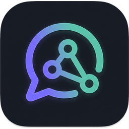

Windows
x64 — NSIS setup or portable .zip. Requires Windows 10/11. Built targets match
electron-builder.yml in the repo.

Local LLM DesktopInstall
Pick a build for your OS, optional IDE tooling, or compile from the repository. Replace placeholder links with your release URLs when you publish artifacts.
x64 only. NSIS installer and portable
.zip. Windows 10 or later.
x64 and arm64 (Apple silicon). .dmg and
.zip.
x64 only.
.zip, .deb, AppImage, .rpm, and pacman (.pkg.tar.*).
x64 — NSIS setup or portable .zip. Requires Windows 10/11. Built targets match
electron-builder.yml in the repo.
x64 and arm64 — .dmg or .zip per release. Pick the
artifact that matches your Mac.
x64 — .deb, AppImage, .rpm, pacman, or plain .zip,
depending on what the release ships.
Tooling
Extensions that talk to the desktop app (for example the localhost HTTP bridge). Enable IDE integration in the app settings and start the runtime before using the plugin.
Local LLM Desktop Bridge — chat with your local model from the IDE, optional Java/Kotlin
structural context, apply file blocks from replies, and a live connection strip against
GET /health. Requires JDK 17+ to build; install the distribution via
Settings → Plugins → Install Plugin from Disk…
On GitHub Releases, use the published local-llm-intellij-*.zip when attached to a release, or
run ./gradlew buildPlugin in
integrations/intellij-plugin and install
build/distributions/local-llm-intellij-0.2.4.zip. API details:
intellij-integration.md.
Clone the repository, install Node.js and native build prerequisites for Electron and better-sqlite3, then:
npm install
npm run build
npm run dev # development
# or package via scripts in package.json (dist:*)
See repository README for platform-specific notes. Ollama and llama.cpp are external runtimes
you install separately.
Deploying inside a company or offering the product as part of a paid service requires an enterprise license. Read the terms and contact Cyril Grossenbacher for pricing.